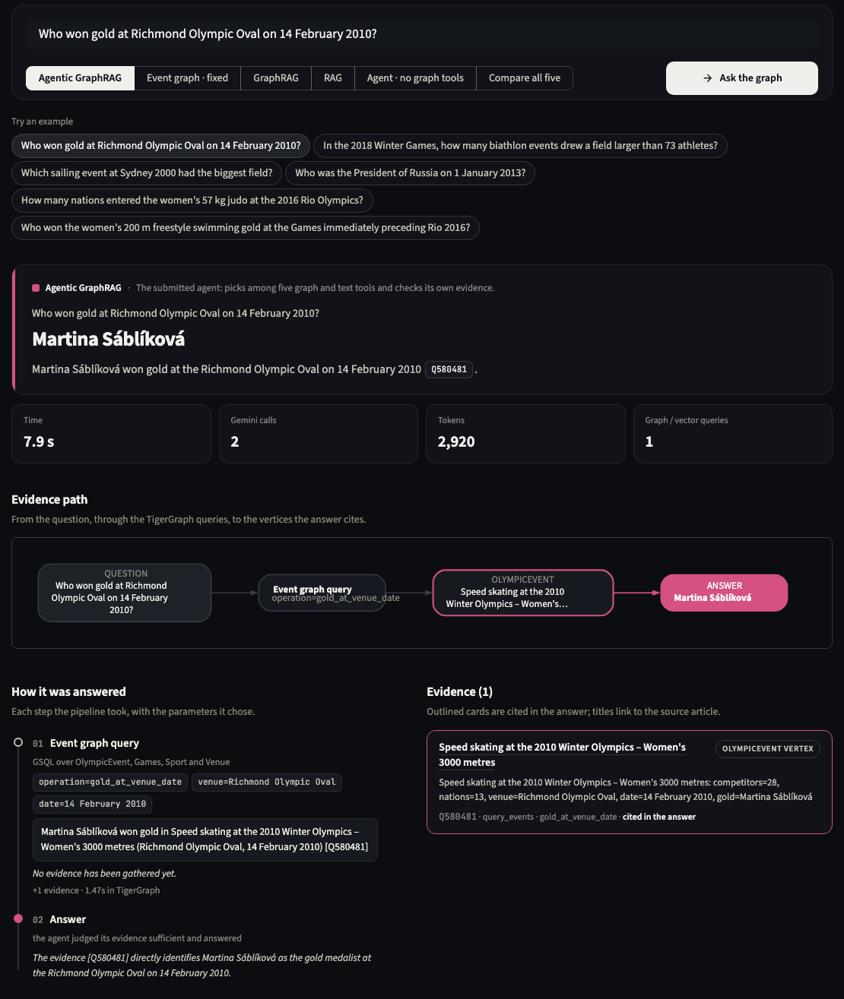
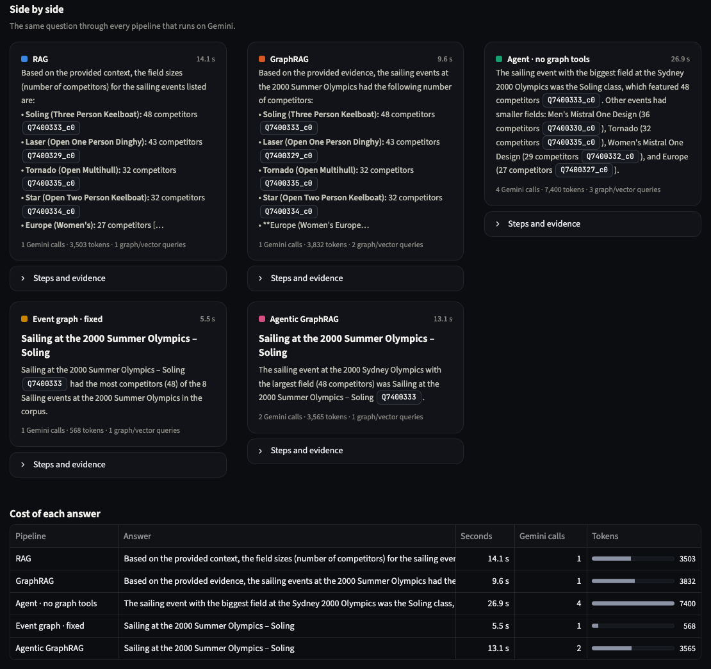
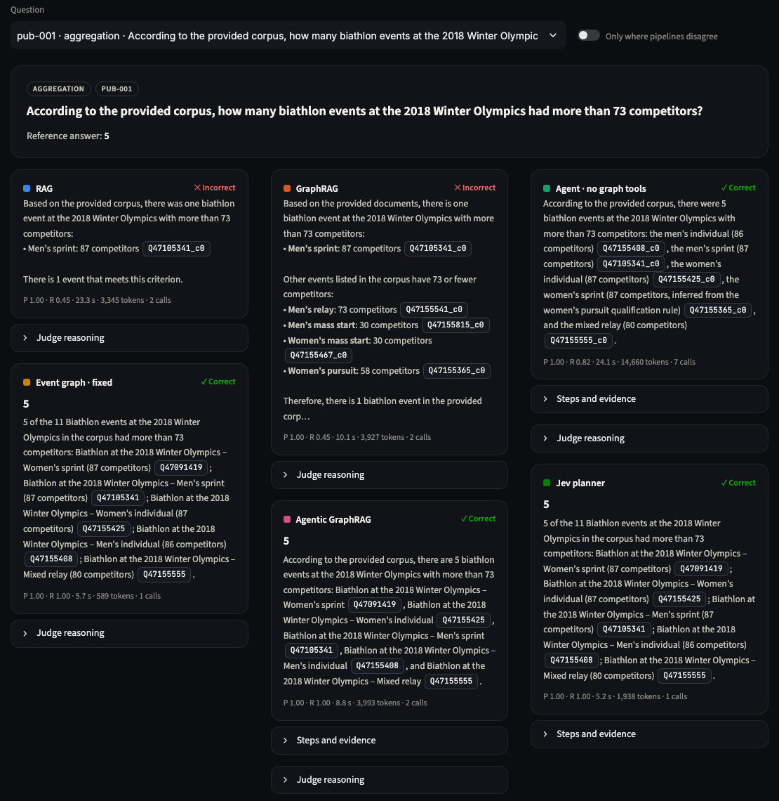
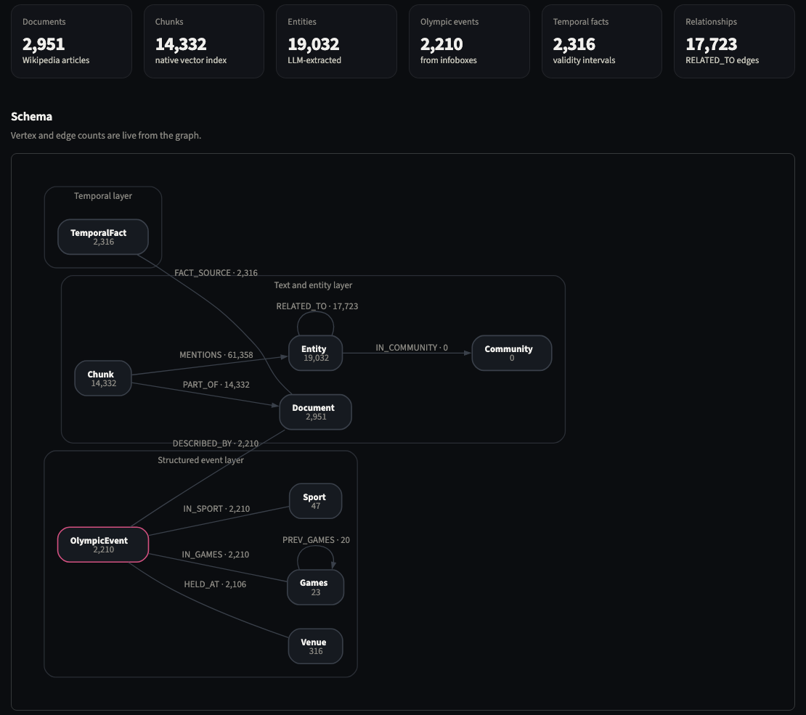

Run it yourself¶
Three ways in: a web console for asking questions and browsing results, a terminal command, and TigerGraph's own GraphStudio.
The console¶
A web app with three pages: Ask (live questions), Benchmark (all results, with a submitted/reproduced toggle) and Graph (schema plus a query runner).




Setup (once)¶
You need a TigerGraph Savanna workspace (4.2.x) with an empty graph named test and a secret for it, a Gemini API key with billing enabled, and Python 3.11.
git clone <this repo> && cd agentic-graphrag-repro
python3.11 -m venv .venv && .venv/bin/pip install -r requirements.txt
cp .env.example .env # then fill in TG_HOST, TG_SECRET, GOOGLE_API_KEY
Keep every other setting in .env.example as it is. They match the submission: Gemini 3.1 Flash-Lite, local BGE embeddings, reranker on.
Build the graph (once)¶
python -m src.ingestion.create_schema
python -m src.ingestion.fix_related_to_discriminator # missing from the README
python -m src.ingestion.create_queries
python -m src.ingestion.load_documents_chunks
python -m src.ingestion.run_extraction_batch # the long, Gemini-heavy step
python -m src.ingestion.build_entities_graph
python -m src.ingestion.build_event_graph
python -m src.ingestion.build_temporal_facts # missing from the README
Skip the expensive step
data/results/extractions.jsonl holds our finished Gemini extraction. If it is present, run_extraction_batch finds every article already done, skips about 1,600 Gemini calls, and you get our exact entity graph.
Ask questions¶
.venv/bin/python scripts/ask.py "Who won gold at Richmond Olympic Oval on 14 February 2010?"
.venv/bin/python scripts/ask.py --compare "Which sailing event at Sydney 2000 had the biggest field?"
.venv/bin/python scripts/ask.py -p rag "..." # rag · graphrag · agentic · event_graph · investigator
.venv/bin/python scripts/ask.py # interactive: one question per line, blank line quits
In Savanna, open GraphStudio → graph test → Write Queries. All eight queries are installed there and can be run with parameters, with results drawn as a graph.
Questions that work well (the library is mostly Olympic events):
- Who won gold at Richmond Olympic Oval on 14 February 2010?: Martina Sáblíková
- In the 2018 Winter Games, how many biathlon events drew a field larger than 73 athletes?: 5
- Which sailing event at Sydney 2000 had the biggest field?: Soling
- Who was the President of Russia on 1 January 2013?: Vladimir Putin
- Who won the women's 200 m freestyle at the Games immediately preceding Rio 2016?: Allison Schmitt
Rerun the benchmark¶
# Always pass --output: the default file already holds the team's results, and done questions are skipped.
python -m src.eval.run_benchmark --pipelines rag,graphrag,agentic,event_graph,investigator \
--output data/results/my_run.jsonl
python -m src.eval.oracle data/results/repro_hidden_investigator.jsonl # hidden-set check, no AI or database
python -m tests.test_regressions # about a second, no AI or database